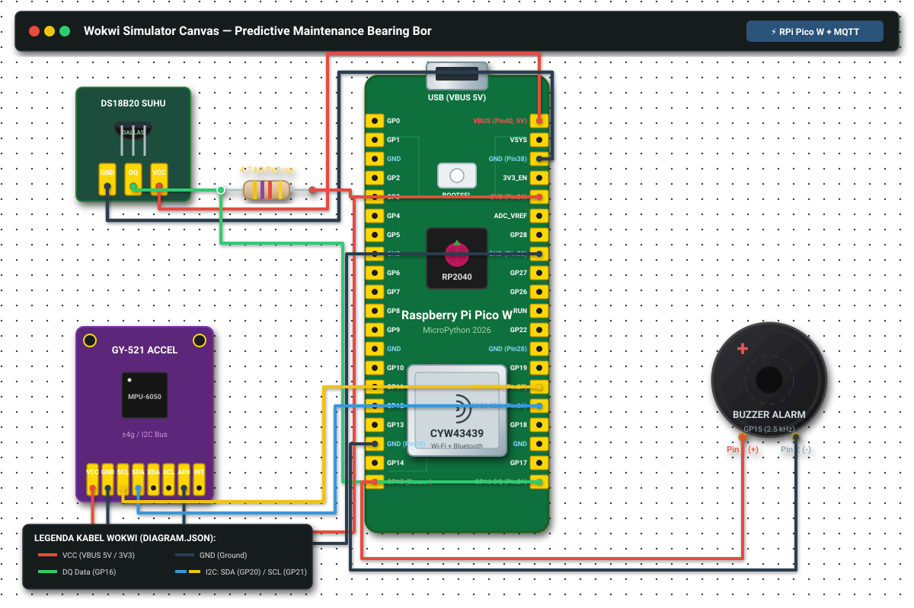
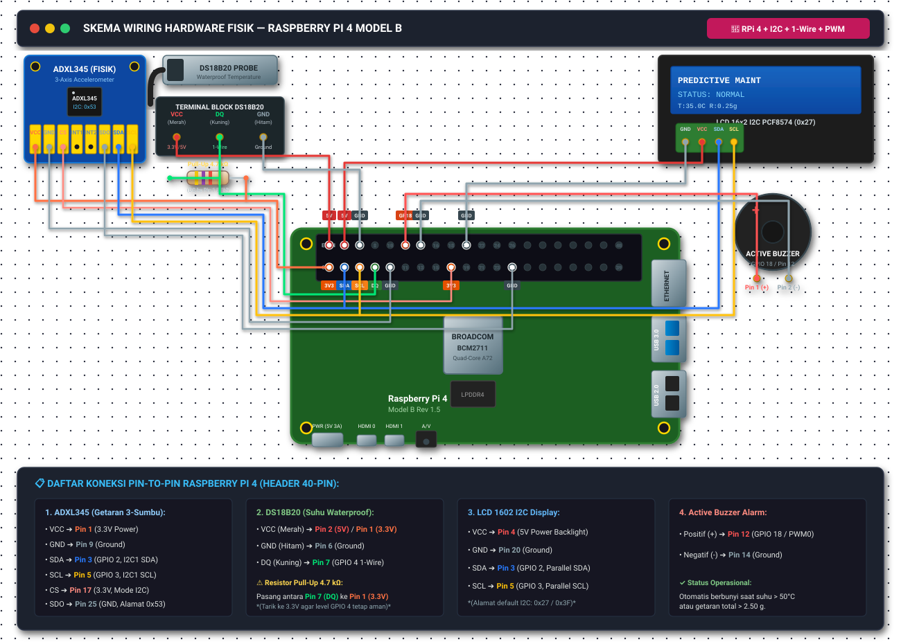

Simulasi Wokwi (Raspberry Pi Pico W) & Implementasi Fisik (Raspberry Pi 4) terintegrasi dengan ThingsBoard Cloud EU (eu.thingsboard.cloud).


| Komponen | Pin Komponen | Warna Kabel | Pin Raspberry Pi Pico | Nama Pin Pico | Fungsi / Keterangan |
|---|---|---|---|---|---|
| DS18B20 (Sensor Suhu Waterproof) |
VCC (Kabel Merah) | Merah | Pin 36 | 3V3 (OUT) | Daya 3.3V aman untuk logika GPIO Pico RP2040 |
| GND (Kabel Hitam) | Hitam | Pin 38 | GND | Grounding common | |
| DQ (Kabel Kuning / Hijau) | Hijau / Kuning | Pin 21 | GP16 | Data OneWire (Pull-up 4.7k ke Pin 36 3.3V) | |
| MPU-6050 (Wokwi) / ADXL345 (Real Hardware) |
VCC | Oranye / Merah | Pin 36 | 3V3 (OUT) | Daya logic 3.3V aman untuk I2C Pico |
| GND & AD0 | Hitam | Pin 28 | GND | Ground & alamat I2C default (0x68) | |
| SCL | Kuning / Emas | Pin 27 | GP21 (I2C0 SCL) | Clock I2C | |
| SDA | Biru | Pin 26 | GP20 (I2C0 SDA) | Data I2C | |
| Buzzer Alarm (Piezo Sounder) |
Pin 2 / Positif (+) / Red Lead | Merah | Pin 20 | GP15 (PWM) | Sinyal Alarm Frekuensi 2500 Hz (Pin 2 di Wokwi) |
| Pin 1 / Negatif (-) / Black Lead | Hitam | Pin 18 | GND | Ground Buzzer (Pin 1 di Wokwi) | |
| LCD 16x2 I2C (PCF8574 Backpack) |
VCC | Merah | Pin 40 | VBUS (5V) | Daya 5V modul LCD & backlight |
| GND | Hitam | Pin 23 | GND | Grounding common (Pin 23 GND.5) | |
| SDA | Biru | Pin 26 | GP20 (I2C0 SDA) | Data I2C (Alamat 0x27) | |
| SCL | Kuning / Emas | Pin 27 | GP21 (I2C0 SCL) | Clock I2C |
"alarm": true)."NORMAL" menjadi "ALARM".{
"rms_x": 0.125,
"rms_y": 0.180,
"rms_z": 0.210,
"rms_total": 0.304,
"frekuensi_dominan_total": 25.0,
"peak_x": 0.280,
"peak_y": 0.350,
"peak_z": 0.410,
"peak_total": 0.607,
"amplitudo_dominan_total": 0.285,
"temperature": 27.5,
"alarm": false,
"status_alarm": "NORMAL"
}